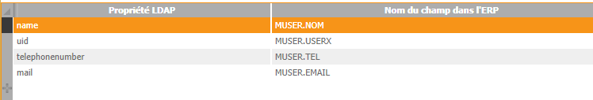
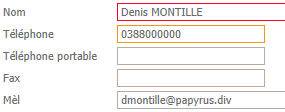

Les données des utilisateurs de l'annuaire LDAP sont copiées dans la table des utilisateurs de l'ERP sur la base de règles permettant d'associer propriétés dans l'annuaire et champs de la fiche utilisateur de l'ERP.
Après avoir lancé la console d'administration LDAP, cliquez sur le bouton Champs. Le tableau affiché permet de saisir librement (*) les associations. Par exemple :

(*) Seule l'association entre une propriété LDAP (uid dans cet exemple) et le champ MUSER.USERX est obligatoire (afin de renseigner au minimum le code utilisateur Divalto).
Attention : L’utilisateur de la console doit disposer du droit HCO pour être autorisé à créer ou modifier ces associations.
A partir de là, les valeurs des propriétés LDAP nommées dans le tableau seront transférées dans les champs correspondants de la table des utilisateurs de l'ERP. A titre d'exemple, avec le tableau ci-dessus, les valeurs des propriétés LDAP name, uid, telephonenumber et mail seront respectivement placées dans les champs MUSER.NOM (Nom), MUSER.USERX (Code), MUSER.TEL (Téléphone) et MUSER.EMAIL (Mèl) de la fiche utilisateur :

Remarque importante :
Les données spécifiées dans le tableau ne sont plus modifiables depuis le zoom des utilisateurs communs de l’ERP.
En cas de modification dans l’annuaire LDAP, les nouvelles valeurs seront synchronisées.
Dans un annuaire LDAP, l'administrateur est autorisé à ajouter des propriétés personnalisées. Vous pouvez utiliser cette capacité pour y déclarer des propriétés spécifiques aux utilisateurs de Divalto. Associez ici ces propriétés à des champs de la fiche utilisateur pour qu'elles soient importées et synchronisées.
Option Synchroniser les applications :
Si vous le souhaitez, vous pouvez spécifier les droits d'accès aux applications Divalto directement dans l'annuaire LDAP (voir remarque précédente concernant la capacité à déclarer des propriétés personnalisées dans un annuaire LDAP).
Pour que ces droits soient importés et synchronisés, cochez la case Synchronisez les applications.
Pourquoi utiliser cette option :
Vous avez associé le groupe d'utilisateurs LDAP GROUPE_1 au modèle d'utilisateurs MODELE_1. Dans ce modèle, vous avez globalement autorisé l'accès aux applications APPLI_1, APPLI_2, ..., APPLI_P. Par défaut, ces droits s'appliqueront donc à tous les utilisateurs du groupe GROUPE_1.
Toutefois, quelques utilisateurs de ce groupe auront accès à l'une ou l'autre application supplémentaire ou, à l'inverse, n'auront pas accès à l'une ou l'autre application globalement autorisée.
Plutôt que d'éclater un groupe majoritairement homogène en plusieurs groupes et modèles reflétant l'ensemble des déclinaisons possibles, spécifiez uniquement les rares différences dans une propriété spécifique de l'annuaire LDAP. Les droits ajoutés ou retirés dans l'annuaire seront prioritaires sur ceux trouvés au niveau du modèle.
Comment la mettre en oeuvre :
Dans l'annuaire, créer une propriété pour chaque application concernée. Par convention, le nom de cette propriété est fixée à la valeur DIVALTOCodeApplic, où CodeApplic est le nom de code de l'application (voir la table MAPPLIC).
Par exemple : DIVALTODAV, DIVALTODPAIE, DIVALTODCPT, …
Pour un utilisateur qui doit avoir accès à une application (lorsque cette application n'est pas autorisée au niveau du modèle), affectez la valeur 1 à la propriété LDAP correspondante.
Pour un utilisateur qui ne doit pas avoir accès à une application (lorsque cette application est autorisée au niveau du modèle), affectez la valeur 0 à la propriété LDAP correspondante.
Voir aussi : Règles de correspondance des utilisateurs de l'annuaire avec les modèles d'utilisateurs de l'ERP.